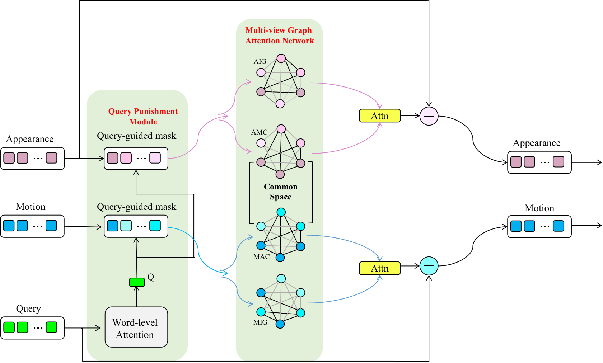

News
- 2022-10 RLPrompt has been accepted at EMNLP 2022.
- 2022-05 My co-first author paper regarding directly searching discrete prompts under low-resource regimes with reinforcement learning is published at arxiv! It is a ground-breaking work from my perspective.
- 2021-09 My TMM 2021 paper has been selected as a spotlight in VALSE2021 in Hangzhou. However, due to time conflict, I have to cancel that plan (degrade to poster).
- 2021-06 My first paper regarding disentangled representation for Video Language Reasoning (VideoQA) is accepted by "TMM 2021".
|
|
Research
My research interest lies broadly in machine learning, with a minor focus on language technologies.
|
|
|
RLPrompt: Optimizing Discrete Text Prompts With Reinforcement Learning
Mingkai Deng*,
Jianyu Wang*,
Cheng-Ping Hsieh*,
Yihan Wang,
Han Guo,
Tianmin Shu,
Meng Song,
Eric P. Xing,
Zhiting Hu
EMNLP 2022
arXiv
/
code
/
Poster
/
CMU ML Blog
/
Video
The "first" efficient and applicable low-resource discrete prompt optimization framework (i.e. RL - stochastic reward) that enable pre-trained LMs (i.e. MLMs and CLMs) to perform both NLU and NLG tasks. Extensive experiments on few-shot classification and zero-shot text style transfer show superior performance to a wide range of existing methods.
|
|

|
DualVGR: A Dual-Visual Graph Reasoning Unit for Video Question Answering
Jianyu Wang,
Bing-Kun Bao,
Changsheng Xu
TMM 2021, VALSE 2021 spotlight
arXiv
/
code
/
Poster
An implicit two-stream multi-step reasoning unit for Video Question Answering. A key novelty lied in our unit is the way of disentangled video representation (proposed to model the intra-modal and cross-modal interactions), which aligns with CMU MultiCompLab's recent work in ICLR2019.
|
Invited Talks
- Live Broadcast for 'Natural Language Processing in Action' Book in three platforms, encompassing Alibaba Cloud Tianchi, Bilibili Datawhale and epubit.
|
Professional Services
- Invited Reviewer for ACL, KDD, EMNLP, etc
|
According to my colleagues, I borrow this template from him.
|
|